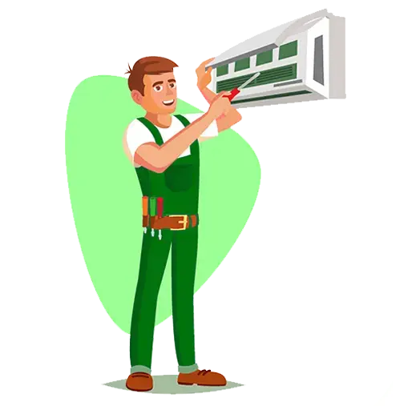

Trenchless Sewer Lining Services in San Diego
Trenchless sewer lining is a cutting-edge method for repairing damaged sewer lines without requiring invasive digging. At EZ Heat and Air, we specialize in providing reliable Trenchless Sewer Lining in San Diego to restore your plumbing system with minimal disruption. This innovative technology allows us to fix sewer line problems quickly, efficiently, and cost-effectively, helping homeowners and businesses avoid the hassle and expense of traditional sewer repairs.
We can address common sewer issues such as cracks, corrosion, and root intrusions using advanced trenchless technology. Whether you’re facing frequent backups, slow drains, or pipe deterioration, our San Diego trenchless sewer line repair services offer a durable and long-lasting solution.
EZ Heat and Air is your trusted partner for seamless repairs that protect your property and save you time and money.
Extensive Trenchless Sewer Line Repair Services
Pipe Relining for Long-Lasting Repairs
Our sewer lining techniques involve inserting a flexible liner coated with epoxy into the damaged pipe. Once in place, the liner is inflated, forming a new, durable pipe within the existing one. This method ensures minimal disruption to your property while providing a reliable and long-lasting solution for sewer line issues.
Expert Detection and Precision Repairs
At EZ Heat and Air, we use advanced diagnostic tools to identify the exact location and extent of sewer line damage. Our precision repairs ensure that only the affected areas are addressed, saving you time and money. With our San Diego trenchless sewer line repair services, you can trust that your sewer lines are in good hands.
Affordable and Environmentally Friendly Solutions
Trenchless sewer lining is not only cost-effective but also eco-friendly. By reducing the need for excavation, we minimize soil disruption and decrease the amount of waste generated during the repair process. Our trenchless sewer lining in San Diego offers a sustainable approach to plumbing repairs.
Pre-Sale Inspections and Sewer Line Maintenance
Before selling or buying a property, a thorough inspection of the sewer lines is essential. Our trenchless sewer line maintenance and inspections help identify potential issues early on, ensuring that your real estate transaction proceeds smoothly. We provide detailed reports and recommendations to give you peace of mind.
How Does Our Trenchless Sewer Lining Work?

Diagnostic Inspection
We begin with a high-definition sewer camera inspection to identify the exact cause and location of the sewer line issue. Our diagnostic tools give us a clear view of the damage, allowing us to provide precise solutions for your trenchless sewer lining in San Diego.
Cleaning and Preparation
The damaged pipe is thoroughly cleaned using Hydro Jetting to remove any debris, roots, or scale buildup. This ensures that the liner adheres correctly to the existing pipe, resulting in a smooth and durable interior for your repaired sewer line.
Lining Insertion
A flexible epoxy-coated liner is carefully inserted into the existing pipe and positioned at the damaged area. The liner is tailored to fit the exact dimensions of your sewer line, ensuring a perfect fit and long-term performance.
Curing and Final Inspection
The epoxy lining is cured in place, creating a solid and long-lasting pipe within the old one. Once cured, we conduct a final camera inspection to confirm that the repair is seamless and the sewer line is functioning perfectly.

24/7
Service
Same-day Plumbing Service For Any Issue Or Concern Related To Leakage, Clogging, Or Malfunctioning Of Appliances.

FREE
Estimate
Request a quote and get a free estimate for installation, repair, and replacement services from professionals.

FREE
Service Call
From plumbing repairs to full replacements, connect with our experts to inquire about services at zero charges.

15%
Discount Available
15% Off to the Police, Military, Fire Seniors and Teachers for Services up to $1000.

FINANCING
Available
Overcome financial barriers and keep your plumbing system up to date with our alternative financing options.
Ready to Restore Your Sewer Lines?
CALL EXPERTS NOW
 (844) 755-7889
(844) 755-7889
Real Stories, Real Results

"EZ Heat and Air saved my backyard from being dug up. Their trenchless repair was fast, efficient, and very professional!"
Sarah M. - San Diego
"I was impressed with how quickly they fixed my sewer line. No mess, no stress. Highly recommend!"
John L. - Riverside
"Great service and competitive pricing. The team was knowledgeable and kept me informed throughout the process."
Amanda R. - Orange County
The Benefits of Trenchless Sewer Lining
Minimal Disruption
Eliminates the need for extensive digging, preserving landscaping and driveways.
Durable Results
High-quality epoxy resin creates a seamless pipe that can last for decades.
Cost-Effective
Typically completed faster, saving labor costs and reducing downtime.
Eco-Friendly
Minimizes soil disruption and use of sustainable materials.
Emergency Services
Available 24/7 for urgent trenchless repairs.

FAQs
Trenchless sewer repair is often more cost-effective than traditional methods because it eliminates the need for extensive excavation, which saves on labor and property restoration costs. Prices typically range from $60 to $250 per foot, depending on the specifics of the job.
The process involves inserting an epoxy-coated flexible liner into the damaged pipe. Once positioned, it is inflated and cured in place, creating a new, seamless pipe within the old one.
Yes, trenchless technology is suitable for residential, commercial, and industrial properties in San Diego. It is particularly beneficial for properties with finished landscaping or driveways.
The cost is influenced by the extent of the damage, the length of the sewer line, and the accessibility of the repair site.
Trenchless sewer linings are extremely durable and typically last between 50 and 100 years, providing a long-term solution for sewer line issues.